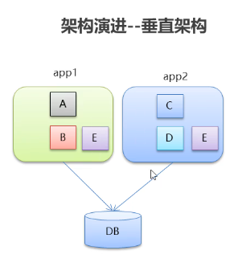
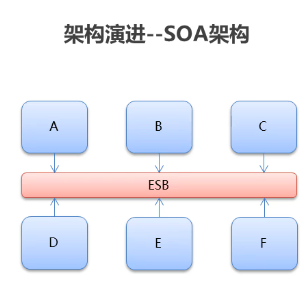
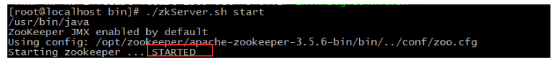

项目一前置课-Dubbo
1-今日内容¶
分布式系统中的相关概念
dubbo 概述
dubbo快速入门
dubbo的高级特性
2-相关概念¶
2.1-互联网项目架构-特点¶
互联网项目架构-特点
-
用户多
-
流量大，并发高
-
海量数据
-
易受攻击
-
功能繁琐
-
变更快
传统项目和互联网项目的不同

用户体验： 美观、功能、速度、稳定性
衡量一个网站速度是否快: 打开一个新页面一瞬间完成;页面内跳转，-刹那间完成。 根据佛经《僧衹律》记载:一 刹那者为-念,二十念为-瞬,二十瞬为-弹 指，二十弹指为-罗预， 二十罗预为-须臾，一日一夜有三十须臾。
2.2-互联网项目架构-目标¶
衡量网站的性能指标: 响应时间:指执行一个请求从开始到最后收到响应数据所花费的总体时间。 并发数:指系统同时能处理的请求数量。 并发连接数: 指的是客户端向服务器发起请求，并建立了TCP连接。每秒钟服务器连接的总TCP数量 请求数:也称为QPS(Query Per Second)指每秒多少请求. 并发用户数:单位时间内有多少用户 吞吐量:指单位时间内系统能处理的请求数量。
●QPS: Query Per Second每秒查询数。
●TPS: Transactions Per Second每秒事务数。
●一个事务是指一 个客户机向服务器发送请求然后服务器做出反应的过程。客户机在发送请求时开始计时，收到服务器响应后结束
计时，以此来计算使用的时间和完成的事务个数。
●一个页面的一次访问，只会形成一 个TPS; 但-次页面请求，可能产生多次对服务器的请求，就会有多个QPS
QPS>=并发连接数>= TPS
大型互联网项目架构目标:
●高性能:提供快速的访问体验。 ●高可用:网站服务- 可以正常访问
2.3-集群和分布式¶
集群和分布式， ●集群:很多“人”一起，干一样的事。 ●一个业务模块，部署在多台服务器上。 ●分布式:很多"人”一起，干不样的事。这些不一样的事， 合起来是一件大事。

2.4-架构演进¶
单体架构：
优点: 简单:开发部署都很方便，小型项目首选 缺点: ●项目启动慢 ●可靠性差

垂直架构：垂直架构是指将单体架构中的多个模块拆分为多个独立的项目。形成多个独立的单体架构。
单体架构存在的问题:
-
项目启动慢
-
可靠性差
-
可伸缩性差
-
扩展性和可维护性差
-
性能低
垂直架构存在的问题: 重复功能太多

分布式架构：是指在垂直架构的基础上,将公共业务模块抽取出来,作为独立的服务供其他调用者消费，以实现服务的共享和重用。底层通过RPC（远程过程调用实现） RPC: Remote Procedure Call远程过程调用。有非常多的协议和技术来都实现了RPC的过程。比如: HTTP REST风格，Java RMI规范、WebService SOAP协议Hession等等。 垂直架构存在的问题: ●重复功能太多
分布式架构存在的问题: ●服务提供方- -旦产生变更,所有消费方都需要变更。

SOA: (Service- Oriented Architecture,面向服务的架构)：是一个组件模型,它将应用程序的不同功能单元(称为服务)进行拆分，并通过这些服务之间定义良好的接口和契约联系起来。
ESB: (Enterparise Servce Bus)：企业服务总线,服务中介。主要是提供了一一个服 务于服务之间的交互。ESB包含的功能如:负载均衡，流量控制，加密处理，服务 的监控，异常处理，监控告急等等。

微服务架构：
●微服务架构是在SOA上做的升华,微服务架构强调的一个重点是“业务需要彻底的组件化和服务化”，原有的单个 业务系统会拆分为多个可以独立开发、设计、运行的小应用。这些小应用之间通过服务完成交互和集成。
●微服务架构= 80%的SOA服务架构思想+ 100%的组件化架构思想+ 80%的领域建模思想
特点: ●服务实现组件化:开发者可以自由选择开发技术。也不需要协调其他团队 ●服务之间交互一 般使用REST API ●去中心化:每个微服务有自己私有的数据库持久化业务数据 ●自动化部署:把应用拆分成为一 个-个独立的单个服务,方便自动化部署、测试、运维

3-dubbo 概述¶
Dubbo概念
●Dubbo是阿里巴巴公司开源的一个高性能、轻量级的Java RPC框架。 ●致力于提供高性能和透明化的RPC远程服务调用方案,以及SOA服务治理方案。 ●官网: htp://ubbo.apache.orgo

节点角色说明: . ●Provider: 暴露服务的服务提供方 ●Contahier: 服务运行容器 ●Consumer: 调用远程服务的服务消费方 ●Registry: 服务注册与发现的注册中心 ●Monitor:统计服务的调用次数和调用时间的监控中心
4-dubbo快速入门¶
4.1zookeeper安装¶
安装步骤：
第一步：安装 jdk（略） 第二步：把 zookeeper 的压缩包（zookeeper-3.4.6.tar.gz）上传到 linux 系统 第三步：解压缩压缩包
tar -zxvf zookeeper-3.4.6.tar.gz
第四步：进入zookeeper-3.4.6目录，创建data目录
mkdir data
第五步：进入conf目录 ，把zoo_sample.cfg 改名为zoo.cfg
cd conf
mv zoo_sample.cfg zoo.cfg
第六步：打开zoo.cfg文件, 修改data属性：
dataDir=/root/zookeeper-3.4.6/data
进入Zookeeper的bin目录，启动服务命令
./zkServer.sh start

停止服务命令
./zkServer.sh stop
查看服务状态：standalone 单节点
./zkServer.sh status

4.2spring和springmvc整合¶
实施步骤：
1.创建服务提供者Provider模块 2.创建服务消费者Consumer模块 3.在服务提供者模块编写UserServicelmpl提供服务 4.在服务消费者中的UserC ontroller远程调用 5.UserServicelmpl提供的服务 6.分别启动两个服务，测试
Dubbo作为一个RPC框架，其最核心的功能就是要实现跨网络的远程调用。本小节就是要创建两个应用，一个作为服务的提供方，一个作为服务的消费方。通过Dubbo来实现服务消费方远程调用服务提供方的方法。
1 服务提供方开发
开发步骤：
（1）创建maven工程（打包方式为war）dubbodemo_provider，在pom.xml文件中导入如下坐标
<properties>
<project.build.sourceEncoding>UTF-8</project.build.sourceEncoding>
<maven.compiler.source>1.8</maven.compiler.source>
<maven.compiler.target>1.8</maven.compiler.target>
<spring.version>5.0.5.RELEASE</spring.version>
</properties>
<dependencies>
<dependency>
<groupId>org.springframework</groupId>
<artifactId>spring-context</artifactId>
<version>${spring.version}</version>
</dependency>
<dependency>
<groupId>org.springframework</groupId>
<artifactId>spring-beans</artifactId>
<version>${spring.version}</version>
</dependency>
<dependency>
<groupId>org.springframework</groupId>
<artifactId>spring-webmvc</artifactId>
<version>${spring.version}</version>
</dependency>
<dependency>
<groupId>org.springframework</groupId>
<artifactId>spring-jdbc</artifactId>
<version>${spring.version}</version>
</dependency>
<dependency>
<groupId>org.springframework</groupId>
<artifactId>spring-aspects</artifactId>
<version>${spring.version}</version>
</dependency>
<dependency>
<groupId>org.springframework</groupId>
<artifactId>spring-jms</artifactId>
<version>${spring.version}</version>
</dependency>
<dependency>
<groupId>org.springframework</groupId>
<artifactId>spring-context-support</artifactId>
<version>${spring.version}</version>
</dependency>
<!-- dubbo相关 -->
<dependency>
<groupId>com.alibaba</groupId>
<artifactId>dubbo</artifactId>
<version>2.6.0</version>
</dependency>
<dependency>
<groupId>org.apache.zookeeper</groupId>
<artifactId>zookeeper</artifactId>
<version>3.4.6</version>
</dependency>
<dependency>
<groupId>com.github.sgroschupf</groupId>
<artifactId>zkclient</artifactId>
<version>0.1</version>
</dependency>
<dependency>
<groupId>javassist</groupId>
<artifactId>javassist</artifactId>
<version>3.12.1.GA</version>
</dependency>
<dependency>
<groupId>com.alibaba</groupId>
<artifactId>fastjson</artifactId>
<version>1.2.47</version>
</dependency>
</dependencies>
<build>
<plugins>
<plugin>
<groupId>org.apache.maven.plugins</groupId>
<artifactId>maven-compiler-plugin</artifactId>
<version>2.3.2</version>
<configuration>
<source>1.8</source>
<target>1.8</target>
</configuration>
</plugin>
<plugin>
<groupId>org.apache.tomcat.maven</groupId>
<artifactId>tomcat7-maven-plugin</artifactId>
<configuration>
<!-- 指定端口 -->
<port>8081</port>
<!-- 请求路径 -->
<path>/</path>
</configuration>
</plugin>
</plugins>
</build>
（2）配置web.xml文件
<!DOCTYPE web-app PUBLIC
"-//Sun Microsystems, Inc.//DTD Web Application 2.3//EN"
"http://java.sun.com/dtd/web-app_2_3.dtd" >
<web-app>
<display-name>Archetype Created Web Application</display-name>
<context-param>
<param-name>contextConfigLocation</param-name>
<param-value>classpath:applicationContext*.xml</param-value>
</context-param>
<listener>
<listener-class>org.springframework.web.context.ContextLoaderListener</listener-class>
</listener>
</web-app>
（3）创建服务接口
package com.itheima.service;
public interface HelloService {
public String sayHello(String name);
}
（4）创建服务实现类
注意：服务实现类上使用的Service注解是Dubbo提供的，用于对外发布服务
package com.itheima.service.impl;
import com.alibaba.dubbo.config.annotation.Service;
import com.itheima.service.HelloService;
@Service
public class HelloServiceImpl implements HelloService {
public String sayHello(String name) {
return "hello " + name;
}
}
tomcat7:run
2 服务消费方开发
开发步骤：
（1）创建maven工程（打包方式为war）dubbodemo_consumer，pom.xml配置和上面服务提供者相同，只需要将Tomcat插件的端口号改为8082即可
（2）配置web.xml文件
<!DOCTYPE web-app PUBLIC
"-//Sun Microsystems, Inc.//DTD Web Application 2.3//EN"
"http://java.sun.com/dtd/web-app_2_3.dtd" >
<web-app>
<display-name>Archetype Created Web Application</display-name>
<servlet>
<servlet-name>springmvc</servlet-name>
<servlet-class>org.springframework.web.servlet.DispatcherServlet</servlet-class>
<!-- 指定加载的配置文件 ，通过参数contextConfigLocation加载 -->
<init-param>
<param-name>contextConfigLocation</param-name>
<param-value>classpath:applicationContext-web.xml</param-value>
</init-param>
<load-on-startup>1</load-on-startup>
</servlet>
<servlet-mapping>
<servlet-name>springmvc</servlet-name>
<url-pattern>*.do</url-pattern>
</servlet-mapping>
</web-app>
（3）将服务提供者工程中的HelloService接口复制到当前工程
（4）编写Controller
package com.itheima.controller;
import com.alibaba.dubbo.config.annotation.Reference;
import com.itheima.service.HelloService;
import org.springframework.stereotype.Controller;
import org.springframework.web.bind.annotation.RequestMapping;
import org.springframework.web.bind.annotation.ResponseBody;
@Controller
@RequestMapping("/demo")
public class HelloController {
@Reference
private HelloService helloService;
@RequestMapping("/hello")
@ResponseBody
public String getName(String name){
//远程调用
String result = helloService.sayHello(name);
System.out.println(result);
return result;
}
}
注意：Controller中注入HelloService使用的是Dubbo提供的@Reference注解
4.3服务提供者¶
在dubbodemo_provider工程中src/main/resources下创建applicationContext-service.xml
<?xml version="1.0" encoding="UTF-8"?>
<beans xmlns="http://www.springframework.org/schema/beans"
xmlns:xsi="http://www.w3.org/2001/XMLSchema-instance"
xmlns:p="http://www.springframework.org/schema/p"
xmlns:context="http://www.springframework.org/schema/context"
xmlns:dubbo="http://code.alibabatech.com/schema/dubbo"
xmlns:mvc="http://www.springframework.org/schema/mvc"
xsi:schemaLocation="http://www.springframework.org/schema/beans
http://www.springframework.org/schema/beans/spring-beans.xsd
http://www.springframework.org/schema/mvc
http://www.springframework.org/schema/mvc/spring-mvc.xsd
http://code.alibabatech.com/schema/dubbo
http://code.alibabatech.com/schema/dubbo/dubbo.xsd
http://www.springframework.org/schema/context
http://www.springframework.org/schema/context/spring-context.xsd">
<!-- 当前应用名称，用于注册中心计算应用间依赖关系，注意：消费者和提供者应用名不要一样 -->
<dubbo:application name="dubbodemo_provider" />
<!-- 连接服务注册中心zookeeper ip为zookeeper所在服务器的ip地址-->
<dubbo:registry address="zookeeper://192.168.134.129:2181"/>
<!-- 注册 协议和port 端口默认是20880 -->
<dubbo:protocol name="dubbo" port="20881"></dubbo:protocol>
<!-- 扫描指定包，加上@Service注解的类会被发布为服务 -->
<dubbo:annotation package="com.itheima.service.impl" />
</beans>
4.4服务消费者¶
在dubbodemo_consumer工程中src/main/resources下创建applicationContext-web.xml
<?xml version="1.0" encoding="UTF-8"?>
<beans xmlns="http://www.springframework.org/schema/beans"
xmlns:xsi="http://www.w3.org/2001/XMLSchema-instance"
xmlns:p="http://www.springframework.org/schema/p"
xmlns:context="http://www.springframework.org/schema/context"
xmlns:dubbo="http://code.alibabatech.com/schema/dubbo"
xmlns:mvc="http://www.springframework.org/schema/mvc"
xsi:schemaLocation="http://www.springframework.org/schema/beans
http://www.springframework.org/schema/beans/spring-beans.xsd
http://www.springframework.org/schema/mvc
http://www.springframework.org/schema/mvc/spring-mvc.xsd
http://code.alibabatech.com/schema/dubbo
http://code.alibabatech.com/schema/dubbo/dubbo.xsd
http://www.springframework.org/schema/context
http://www.springframework.org/schema/context/spring-context.xsd">
<!-- 当前应用名称，用于注册中心计算应用间依赖关系，注意：消费者和提供者应用名不要一样 -->
<dubbo:application name="dubbodemo-consumer" />
<!-- 连接服务注册中心zookeeper ip为zookeeper所在服务器的ip地址-->
<dubbo:registry address="zookeeper://192.168.134.129:2181"/>
<!-- 包扫描的方式 引用服务 扫描@Reference -->
<dubbo:annotation package="com.itheima.controller" />
</beans>
运行测试
tomcat7:run启动
在浏览器输入http://localhost:8082/demo/hello.do?name=Jack，查看浏览器输出结果
5-dubbo高级特性¶
5.1dubbo-admin安装¶
dubbo- admin ●dubbo-admin管理平台，是图形化的服务管理页面 ●从注册中心中获取到所有的提供者 /消费者进行配置管理 ●路由规则、动态配置、服务降级、访问控制、权重调整、负载均衡等管理功能 ●dubbo- admin是一个前后端分离的项目。前端使用vue，后端使用springboot ●安装dubbo-admin其实就是部署该项目
具体安装参见：dubbo-admin.md
5.2-dubbo-admin使用¶
具体安装参见：dubbo-admin.md
5.3序列化¶
- dubbo 内部已经将序列化和反序列化的过程内部封装了
- 我们只需要在定义pojo类时实现seriali zable接口即可
- 一般会定义一 个公共的pojo模块,让生产者和消费者都依赖该模块。

User对象未实现seriali zable接口
错误信息：

解决办法：
User implements Serializable
5.4地址缓存¶
注册中心挂了，服务是否可以正常访问？
- 可以，因为dubbo服务消费者在第一-次调用时，会将服务提供方地址缓存到本地，以后在调用则不会访问注册中心。
- 当服务提供者地址发生变化时，注册中心会通知服务消费者。

5.5 超时¶

- 服务消费者在调用服务提供者的时候发生了阻塞、等待的情形,这个时候,服务消费者会直等待下去。
- 在某个峰值时刻，大量的请求都在同时请求服务消费者,会造成线程的大量堆积，势必会造成雪崩。
- dubbo利用超时机制来解决这个问题，设置-个超时时间, 在这个时间段内，无法完成服务访问,则自动断开连接。
- 使用timeout属性配置超时时间，默认值1000，单位毫秒
//timeout 超时时间 单位毫秒 retries 重试次数
@Service(timeout = 3000,retries=0)
5.6重试¶

- 设置了超时时间，在这个时间段内，无法完成服务访问,则自动断开连接。
- 如果出现网络抖动,则这一-次请求就会失败。
- Dubbo提供重试机制来避免类似问题的发生。
- 通过retries属性来设置重试次数。默认为2次
//timeout 超时时间 单位毫秒 retries 重试次数
@Service(timeout = 3000,retries=0)
5.7多版本¶

灰度发布:当出现新功能时,会让一部分用户先使用新功能，用户反馈没问题时，再将所有用户迁移到新功能。
dubbo中使用version属性来设置和调用同一个接口的不同版本
生产者配置
@Service(version="v2.0")
public class UserServiceImp12 implements UserService {...}
消费者配置
@Reference(version = "v2.0")//远程注入
private UserService userService;
5.8负载均衡¶
负载均衡策略(4种) : Random:按权重随机，默认值。按权重设置随机概率。
RoundRobin: 按权重轮询。
LeastActive: 最少活跃调用数,相同活跃数的随机。
ConsistentHash:一 致性Hash,相同参数的请求总是发到同一提供者。

服务提供者配置
@Service(weight = 100)
public class UserServiceImp12 implements UserService {...}
application.xml 配置parameter key

消费者配置
//@Reference(loadbalance = "roundrobin")
//@Reference(loadbalance = "leastactive")
//@Reference(loadbalance = "consistenthash")
@Reference(loadbalance = "random")//默认 按权重随机
private UserService userService;
5.9集群容错¶

集群容错模式: Failover Cluster:失败重试。默认值。当出现失败，重试其它服务器，默认重试2次，使用retries配置。一般用于读操作 Failfast Cluster :快速失败,发起-次调用，失败立即报错。通常用于写操作。 Failsafe Cluster:失败安全，出现异常时，直接忽略。返回一个空结果。 Failback Cluster:失败自动恢复,后台记录失败请求,定时重发。 Forking Cluster :并行调用多个服务器，只要一个成功即返回。 Broadcast Cluster: 广播调用所有提供者,逐个调用，任意一台报错则报错。
消费者配置
@Reference(cluster = "failover")//远程注入
private UserService userService;
5.10服务降级¶
服务降级：当服务器压力剧增的情况下，根据实际业务情况及流量，对一些服务和页面有策略的不处理或换种简单的方式处理，从而释放服务器资源以保证核心交易正常运作或高效运作
服务降级方式: mock= force:return null：表示消费方对该服务的方法调用都直接返回null值,不发起远程调用。用来屏蔽不重要服务不可用时对调用方的影响。
mock=fail:return null：表示消费方对该服务的方法调用在失败后，再返回null值,不抛异常。用来容忍不重要服务不稳定时对调用方的影响

消费方配置
//远程注入
@Reference(mock =“ force :return null")//不再调用userService的服务
private UserService userService;